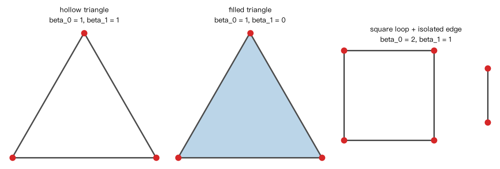

Example07 / 13
单纯复形的贝蒂数——空心三角形与实心三角形
构造边界矩阵 B1（节点 × 边）与 B2（边 × 三角形），用秩计算贝蒂数： beta_0 = n0 - rank B1，beta_1 = (n1 - rank B1) - rank B2。 同时构造霍奇拉普拉斯 L1 = B1^T B1 + B2 B2^T，其零空间维数等于 beta_1。 解读：只有三条边时有一个一维“洞”（beta_1 = 1）；把三角形 {0,1,2} 作为 2-单形填上后洞消失。 这正是“三人两两认识”与“三人同属一个群体”在拓扑上的区别。
Output输出图

Output文字输出
空心三角形：beta_0, beta_1, dim ker L1 = (1, 1, 1) 实心三角形：beta_0, beta_1, dim ker L1 = (1, 0, 0) 四边形环 + 一条孤立边：beta_0, beta_1, dim ker L1 = (2, 1, 1)
Code代码
# 构造边界矩阵 B1（节点 × 边）与 B2（边 × 三角形），用秩计算贝蒂数：
# beta_0 = n0 - rank B1，beta_1 = (n1 - rank B1) - rank B2。
# 同时构造霍奇拉普拉斯 L1 = B1^T B1 + B2 B2^T，其零空间维数等于 beta_1。
# 解读：只有三条边时有一个一维“洞”（beta_1 = 1）；把三角形 {0,1,2} 作为 2-单形填上后洞消失。
# 这正是“三人两两认识”与“三人同属一个群体”在拓扑上的区别。
import numpy as np
from itertools import combinations
def boundary_matrices(n_nodes, edges, triangles):
edges = [tuple(sorted(e)) for e in edges]
eidx = {e: i for i, e in enumerate(edges)}
B1 = np.zeros((n_nodes, len(edges)))
for j, (u, v) in enumerate(edges):
B1[u, j], B1[v, j] = -1, 1
B2 = np.zeros((len(edges), len(triangles)))
for k, t in enumerate(triangles):
a, b, c = sorted(t)
# ∂[a,b,c] = [b,c] - [a,c] + [a,b]
B2[eidx[(b, c)], k], B2[eidx[(a, c)], k], B2[eidx[(a, b)], k] = 1, -1, 1
return B1, B2
def betti(n_nodes, edges, triangles):
B1, B2 = boundary_matrices(n_nodes, edges, triangles)
r1 = np.linalg.matrix_rank(B1) if B1.size else 0
r2 = np.linalg.matrix_rank(B2) if B2.size else 0
L1 = B1.T @ B1 + (B2 @ B2.T if B2.size else 0)
null_L1 = int(np.sum(np.linalg.eigvalsh(L1) < 1e-9))
assert np.allclose(B1 @ B2, 0) if B2.size else True # 边界的边界为零
return int(n_nodes - r1), int(len(edges) - r1 - r2), null_L1
edges = list(combinations(range(3), 2))
print("空心三角形：beta_0, beta_1, dim ker L1 =", betti(3, edges, []))
print("实心三角形：beta_0, beta_1, dim ker L1 =", betti(3, edges, [(0, 1, 2)]))
square = [(0, 1), (1, 2), (2, 3), (0, 3), (4, 5)]
print("四边形环 + 一条孤立边：beta_0, beta_1, dim ker L1 =", betti(6, square, []))
# 作图：三个单纯复形及其贝蒂数（填充 = 2-单形）
import matplotlib.pyplot as plt
fig, ax = plt.subplots(1, 3, figsize=(10, 3.4))
tri = np.array([[0, 0], [1, 0], [0.5, 0.87]])
sq = np.array([[0, 0], [1, 0], [1, 1], [0, 1], [1.6, 0.2], [1.6, 0.8]])
cases = [(tri, edges, [], "hollow triangle"), (tri, edges, [(0, 1, 2)], "filled triangle"),
(sq, square, [], "square loop + isolated edge")]
for a, (P, E, T, ttl) in zip(ax, cases):
for t in T:
a.fill(*P[list(t)].T, color="C0", alpha=0.3)
for u, v in E:
a.plot(*P[[u, v]].T, color="0.3", lw=2)
a.plot(*P[:max(max(e) for e in E) + 1].T, "o", color="C3", ms=8)
b0, b1, _ = betti(len(P), E, T)
a.set_title(f"{ttl}\nbeta_0 = {b0}, beta_1 = {b1}", fontsize=10); a.set_aspect("equal"); a.axis("off")
plt.tight_layout(); plt.show()Run在浏览器中运行
首次加载 Python 环境约需 20–40 秒；可以修改参数后重新运行。